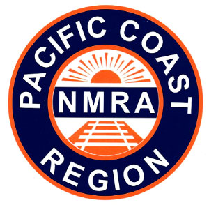

PCR Layout Design & Operations
Weekend Meet
January 31 - February 1, 2026
South Bay Historical Railroad Society
Santa Clara Caltrain Depot
Santa Clara, CA 95050
and online via Zoom
|  |
Welcome to the 2026 PCR Layout Design & Operations Meet! This will be our 33nd annual meet!
The PCR Layout Design and Operations meet is a model railroading event for modelers interested in model railroad design, model railroad operations, railroad and local history, or any related topic.
Tickets are now available at EventBrite for both in-person and remote attendees.
The weekend schedule is now available for the event.
The design challenge details are now available.
What is the event?
This year's event is a mix of clinics and talks, in-person events, and operating sessions at model railroads in the Santa Clara area.
This is intended to be an interactive event. You'll be able to participate in:
When?
Saturday, January 31 - Sunday, February 1, 2026.
On Saturday, attendees will be invited to an operating session on a local layout. Presentations are on Sunday.
Where?
The 2026 meet will be a hybrid event. You can attend Sunday clinics in-person at the South Bay Historical Railroad Society in Santa Clara, or you can partipate in the clinics via Zoom. Recordings of the clinics will be available to all registered attendees after the event.
How much?
Details on tickets will be posted closer to the event.
Who can attend?
This meet is open to ALL model railroaders, regardless of club affiliation or membership. NMRA, PCR, or LDSIG membership is NOT required!
More details?
Read more:
Got questions not answered by this page? Contact the organizers at contact@bayldops.com.